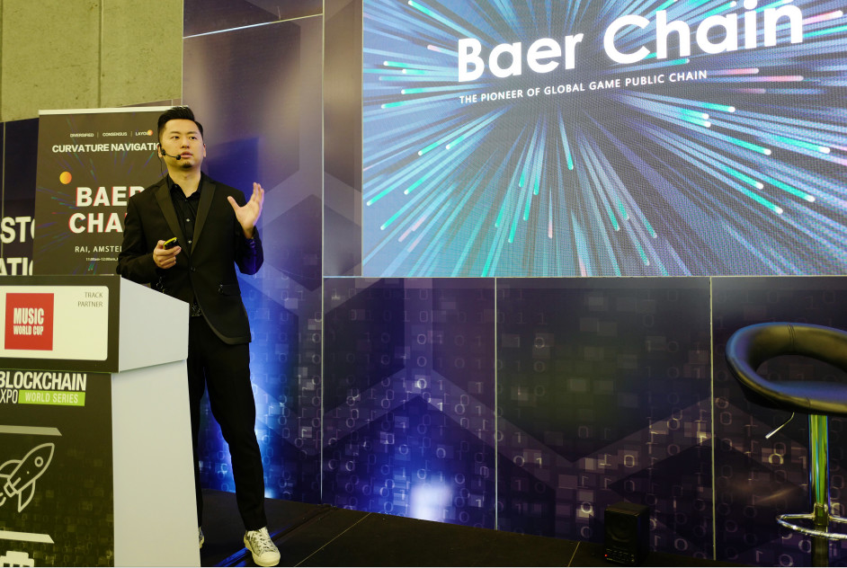
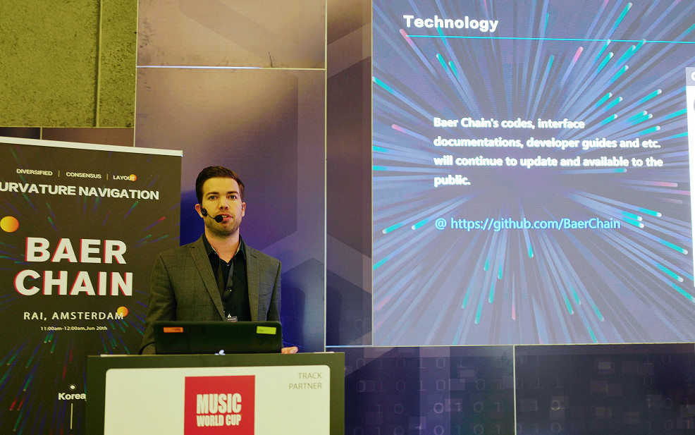
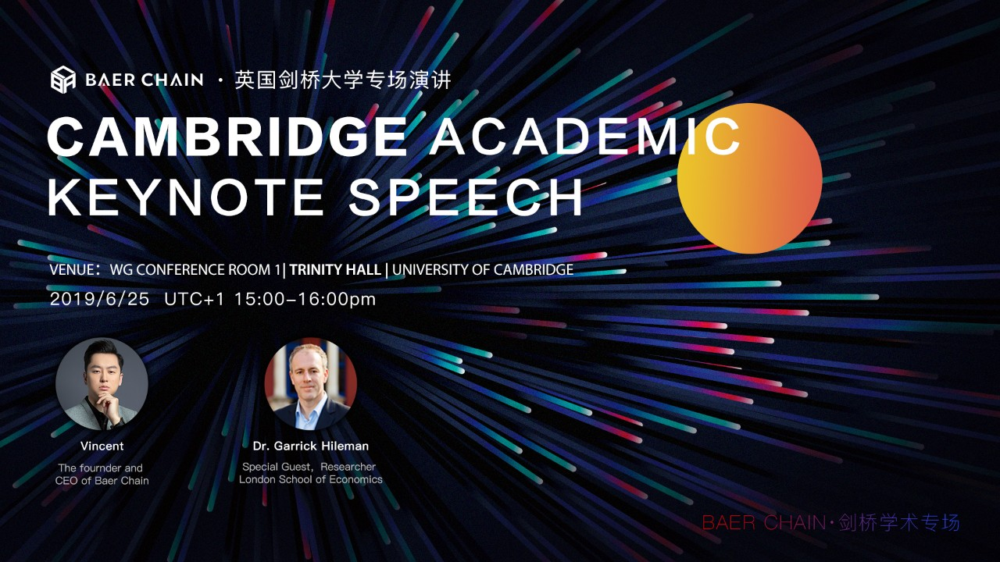

1
6月20日，Baer Chain“曲率航行”全球开发者大会登陆荷兰·阿姆斯特丹，在全球区块链博览会BLOCKCHAIN EXPO 2019上大放异彩。
大会现场区块链大咖领袖与专业开发者齐聚，围绕区块链发展趋势、区块链游戏、智能合约等主题进行深度交流与探讨。
Baer Chain CEO-Vincent在大会上进行了主题演讲。6月初，Baer Chain 主网正式上线公测，由超级节点团队所开发的第一版区块浏览器业已上线，超过十个第三方游戏开发团队正在进行基于Baer Chain技术架构的游戏开发，而更多的开发进展，也在本次大会上一一披露。

Vincent说，“这场以‘曲率航行’为主题的全球系列开发者大会,正在全球范围内持续发酵，越来越多的行业精英已加入其中，有了这些世界级的技术大牛的参与，一定能碰撞出更多思想的火花，助力Baer Chain主网的技术创新与突破。”
2
自Baer Chain主网正式上线公测以来，技术开发一直在所有团队的协作下有序推进。会上，Twan Poubroeks作为超级节点团队的代表，对此进行了分享。

Baer Chain在链上部署了专用的查询节点，并提供了大量的接口，让所有技术人员均能够通过这些接口，输入命令进行特定执行查询，并通过获得Baer Chain上的底层数据，指导技术进行更好的优化与开发。
在查询节点中，提供有很多的执行命令，通过这些命令函数获取包含合约、账户、区块等在内的有关信息，以便帮助开发者更直接地接触到链上的数据。

此外，Twan 还详细讲解了基于 Baer Chain主网技术架构的智能合约开发进展情况：Baer Chain已经在github上公布了智能合约文档，所有的开发者均能够通过文档，快速进入到基于Baer Chain技术架构的智能合约开发。
3
知名商业媒体人Richard Kastelein、荷兰加密行业企业家Ruud Feltkamp作为特邀嘉宾，在大会上与Vincent进行了一场卓有洞见的讨论交流。
Richard Kastelein从ERC721的角度，分析了区块链游戏的发展机遇：“在区块链游戏发展的早期，NFTs有效地吸引到更多人关注这一技术的应用。随着技术的更新迭代，区块链能够承载更好体验的游戏，那么单纯的资产属性便显得远远不够。”
对此，Vincent介绍了Baer Chain的BAS（Baer Chain Asset Standard）系列协议，以其大量、可堆叠，但非完全同质化的特性，让区块链游戏的应用场景具备更多的可能性。
Ruud Feltkamp是欧洲知名自动化交易平台Cryptohopper的联合创始人兼CEO，他与Vincent交流了对加密货币资产在自动化交易中的观点。
在这场全球最具影响力的区块链博览会之后，Baer Chain将于下周前往英国，在剑桥大学继续进行曲率航行的全球影响力扩张之旅。
